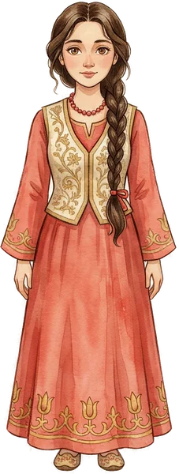
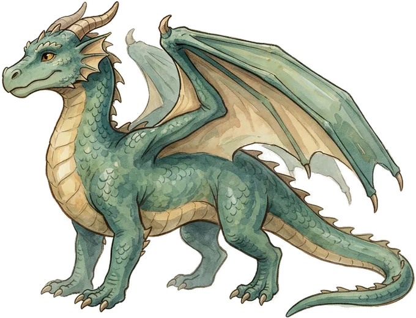
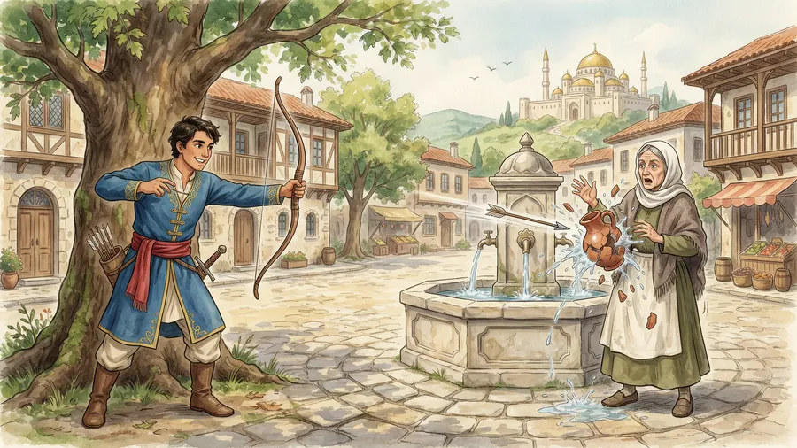
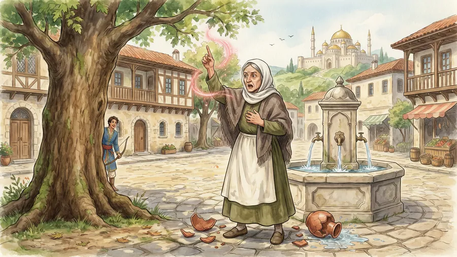
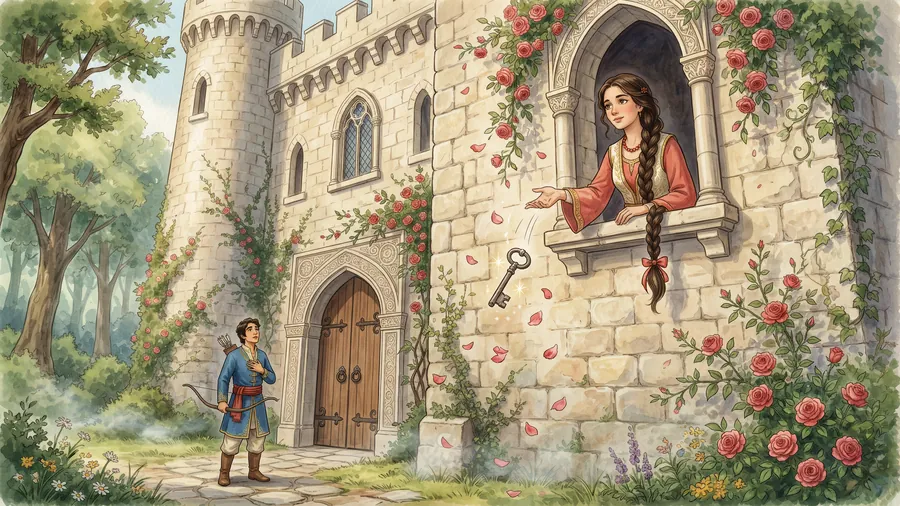
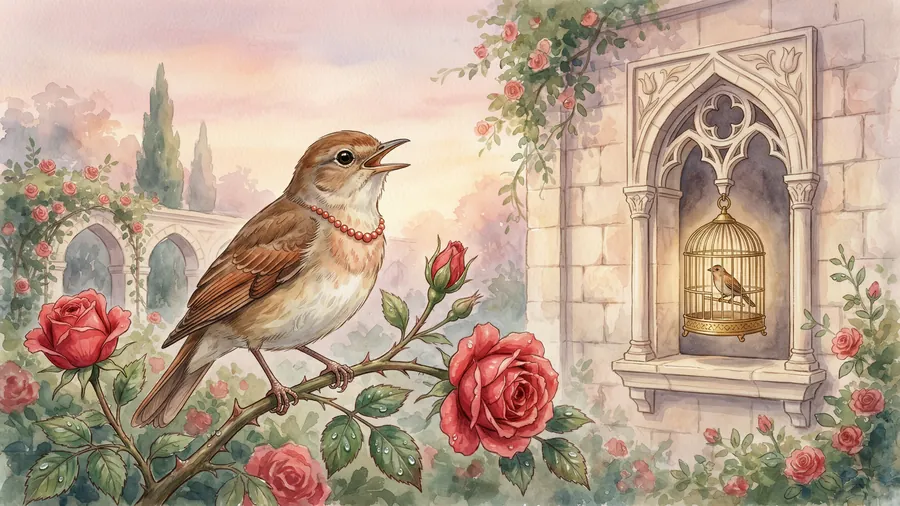
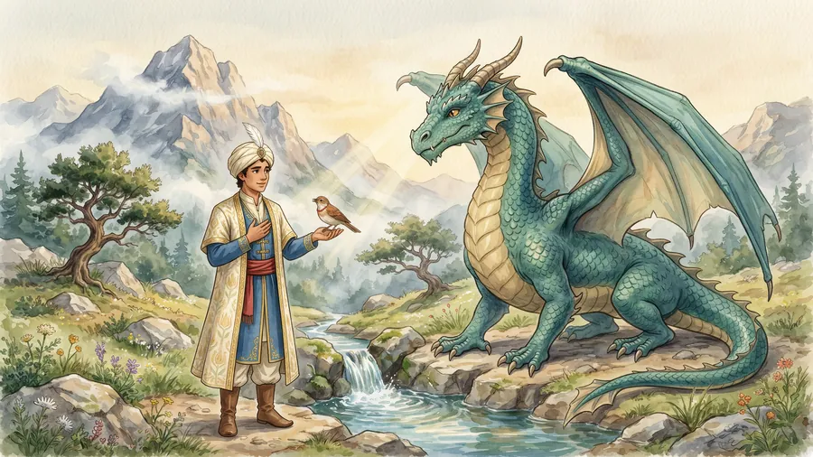
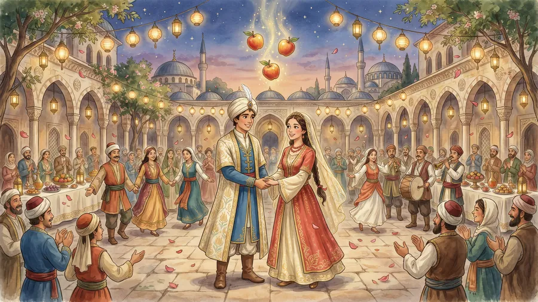

Masalın kişileri
-

Şehzade
Padişahın yakışıklı ve yaramaz oğlu. Eğlence olsun diye yaşlı bir kadının testisini okla kırar; bedduaya uğrayınca hiç görmediği Mercan Kız’a âşık olur.
-

Yaşlı Kadın
Testisi çeşmenin önünde okla kırılınca, oku atanı göremeden beddua eder.
-

Büyücü Kadın
Mercan Kız’ı güllerle kaplı şatoda tutar, kapıyı anahtarla açar. Kaçanların peşine sihirli değneğiyle düşer.
-

Mercan Kız
Şehzadeyle şatodan kaçar, sonra bir yıl kulübede bekler. Büyücü onu bülbüle çevirir; Kaf Dağı’ndaki çeşmenin suyunu içince yeniden insan olur.
-

At
Şehzadeyle Mercan Kız şatodan bu atla kaçar.
-

Genç Hükümdar
Babası ölünce tahta çıkan şehzade. Bülbülün Mercan Kız olduğunu rüyasında görür ve bilginlerin gösterdiği yoldan Kaf Dağı’na gider.
-

Ejderha
Kaf Dağı’ndaki çeşmenin başında durur. Hükümdar iyi niyetle seslenip derdini anlatınca çeşmeden çekilir.
Film şeridi
-

Bir varmış, bir yokmuş; evvel zaman içinde, kalbur saman içinde, yemyeşil ve çeşmeleri gürül gürül akan güzel bir ülke varmış.
-

Padişahın oğlu çok yakışıklı, bir o kadar da yaramazdı. Bir gün eğlence olsun diye çınarın arkasına saklandı ve yaşlı bir kadının su testisini okla kırdı.
-

Yaşlı kadın, oku atanı göremeden “Sen her kimsen, Mercan Kız’a âşık olasın!” diye beddua etti. Şehzade hiç görmediği Mercan Kız’a gönlünü kaptırdı; bir musibet bin nasihatten yeğdir.
-

Şehzade babasından izin alıp Mercan Kız’ı aramaya çıktı. Günlerce yol gittikten sonra güllerle kaplı yüksek bir şato buldu ve bir kadının anahtarla içeri girişini saklanarak izledi.
-

Kadın gidince şehzade sesini değiştirip “Mercan Kız!” diye seslendi; Mercan Kız, büyücü geldi sanıp anahtarı bıraktı. Karşısında yakışıklı bir genç görünce ona âşık oldu ve onunla gitmeye razı oldu.
-

Büyücü kadın sihirli değneğiyle peşlerine düşünce Mercan Kız sihirli suyu arkasına döktü ve aralarında büyük bir perde oluştu. Büyücü, “En az bir yıl kavuşamayasınız!” diye bağırıp geri döndü.
-

Mercan Kız, kavuşmaları bozulmasın diye bir yıl boyunca bir kulübede beklemeyi seçti. Şehzade babasını kaybedip tahta çıktı ve yılın dolmasını dört gözle bekledi.
-

Yıl dolmadan üç gün önce büyücü, Mercan Kız’ı bülbüle çevirdi. Bülbül, sarayın gül bahçesinde dertli dertli ötünce yakalanıp kafese konuldu; hükümdar o gece bülbülün Mercan Kız olduğunu rüyasında gördü.
-

Bilginlerin yol göstermesiyle Kaf Dağı’ndaki çeşmeye giden hükümdar, ejderhaya iyi niyetle seslenip derdini anlattı. Ejderha çeşmenin başından çekildi; tatlı dil yılanı deliğinden çıkarır. Bülbül suyu içer içmez yeniden Mercan Kız oldu.
-

Mercan Kız ile hükümdar kırk gün kırk gece süren bir düğünle evlendi. Sabreden derviş muradına ermiş. Gökten üç elma düştü: biri okuyanın, biri dinleyenin, biri yazanın başına.
- okuyanın
- dinleyenin
- yazanın
Sabır ve iyi niyet, güçten daha çok iş görür.
Şehzade başta okunu eğlence için kullanıyor, sonunda ejderhayı nazik bir konuşmayla çeşmeden uzaklaştırıyor. Altı çizili sözler deyim ve atasözü, italik yazılar mecaz.